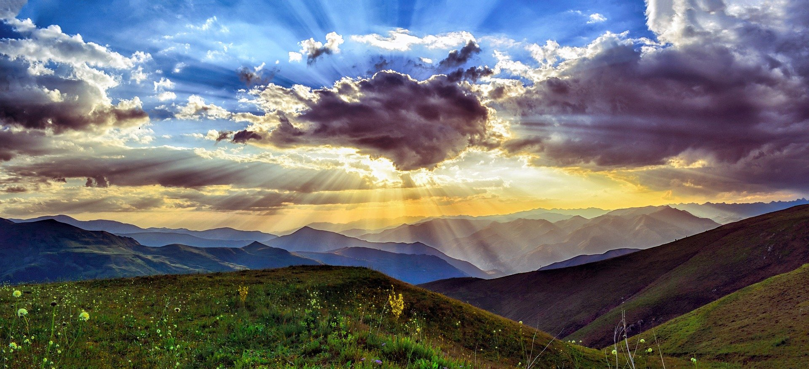

Hello, this is my irst HTML assignment page.
In
this page I will include a few of my hobbies and
future
goals.
Being a Boise (GO BSU) native, you could assume that I am most likely and outdoorsy person. Well...I very much am. I love hiking, fishing, kayaking, playing sports, biking, camping, and tailgating
Being such an outdoorsy person, I love being able to drive 30 minutes into the moutains and be totally away from the city. It makes being spontaneous extremely easy. If you're ever bored, you got options that include
....and many many more options. I like to often
be spontaneous and live by the quote Live every day like
it could be your last
Another important fact about myself, aside from my hobbies, include my huge love for sports. It doesn't matter what sport, as long as it's competitive, I will watch and enjoy it. Whether it's football, baseball, , volleyball, softball, corhole, ect. I absolutely love it. Although I watch it all, I do have some favorites. My favorite sports to watch are baseball, basketball, football, and tennis. I do have some favorites in these sports as well
Aside from professional football, along with the Seattle
Seahawks, I also love the Boise State Broncos. If you don't
happen to know what a bronco is, it's defined as a wild
bucking horse. Often looking like this:
Not only because I am a student there currently but because I grew
up since day one being a fan and I was taught to dislike
the Vandals from Moscow